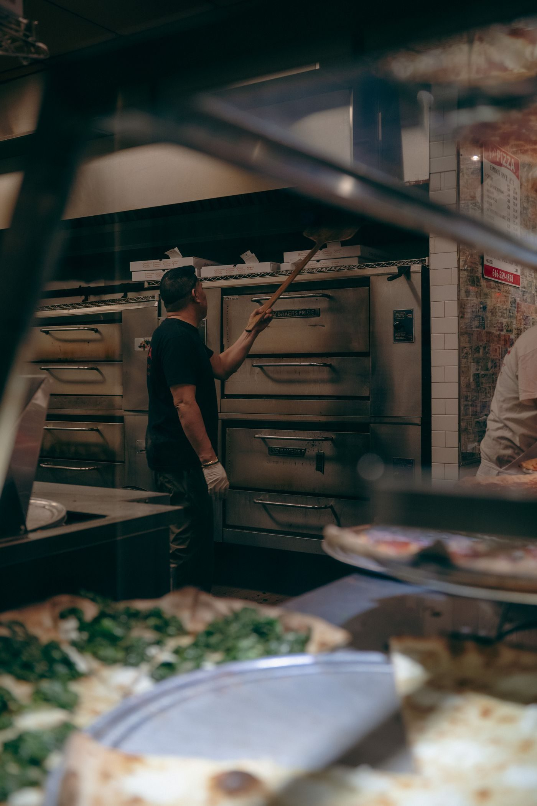
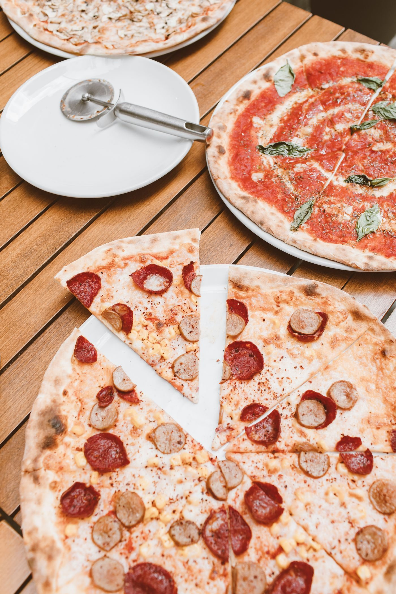
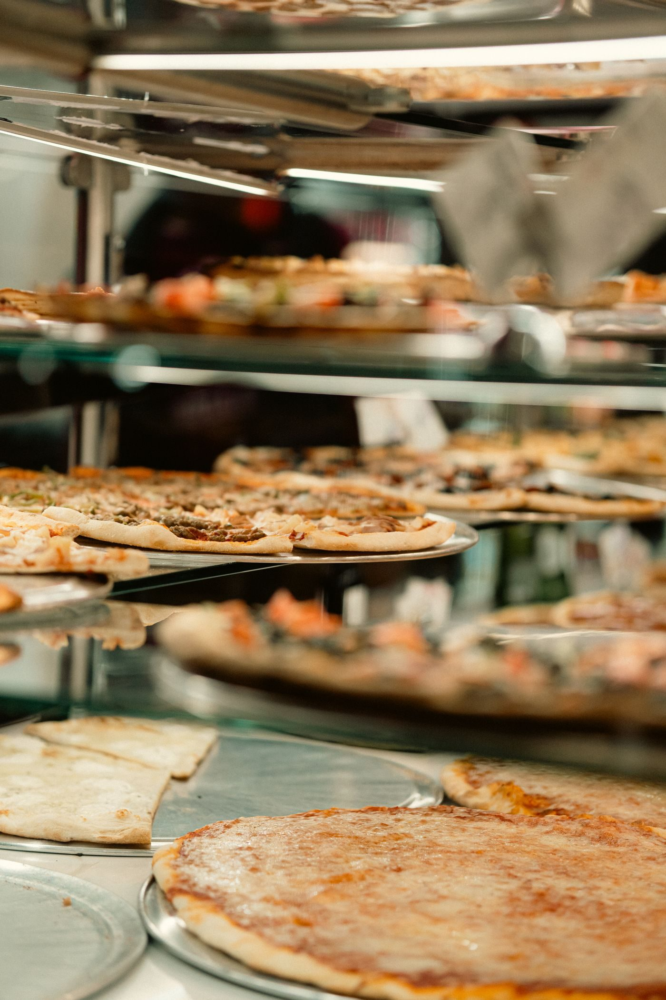

From the kitchen



Metairie, Louisiana · Dinner only
Tower of Pizza at 2104 Veterans Memorial Blvd in Metairie serves hand-tossed, thin-crust New York-style pizza in a vintage dining room. Dine-in, takeout, and delivery, every evening from 4:00 PM.

Tower of Pizza is an old-school New York-style pizzeria and Italian restaurant in Metairie. The room is known for its vintage checkered-tablecloth interior and a dough-tossing window.
The menu centers on thin-crust pizza: Tower Supreme, Tower Special, Hot and Spicy, and Meat Eaters Delight, plus build-your-own pies with 1 to 10 toppings. Salads, spaghetti, sandwiches, and beer round it out.

